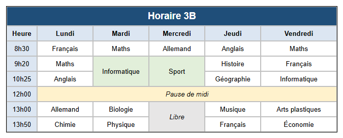

Parcours d'apprentissage › Leçon 3
Fusionner des cellules

Fusionner et dissocier
- Fusionner : faites glisser la souris sur les cellules qui doivent devenir une seule cellule et, dans l'onglet
 Tableau (T), cliquez sur MC (Fusionner les cellules).
Tableau (T), cliquez sur MC (Fusionner les cellules). - Cela fonctionne côte à côte (sur plusieurs colonnes), l'une sous l'autre (sur plusieurs lignes) ou les deux.
- Dissocier : cliquez sur une cellule fusionnée puis sur UMC (Dissocier les cellules).
À vous de jouer
- Créez un tableau de 6 colonnes et 8 lignes (avec AC et AR).
- Titre : faites glisser la souris sur les 6 cellules de la ligne du haut, cliquez sur MC et tapez Horaire 3B. Mettez le titre en gras, plus grand et centré, avec une couleur de cellule foncée et un texte blanc (voir leçon 2).
- Jours et heures : tapez dans la ligne 2 Heure, Lundi ... Vendredi et dans la première colonne les heures de début.
- Un cours de deux heures : le mardi, faites glisser la souris sur les cellules de 9h20 et 10h25, cliquez sur MC et tapez Informatique. Faites de même pour Sport le mercredi.
- Pause de midi : dans la ligne de 12h00, faites glisser la souris du lundi au vendredi, cliquez sur MC et tapez Pause de midi.
- Complétez les autres cours et donnez une couleur aux cellules d'en-tête et de pause.
Dans les coulisses
Dans le code HTML (dépliez le volet en bas), vous voyez comment fonctionne la fusion : une cellule sur plusieurs colonnes
reçoit colspan, une cellule sur plusieurs lignes reçoit rowspan. Le titre a par exemple
colspan="6".
Exercice
Le vendredi après-midi, il y a deux heures de Projet à la place des arts plastiques et de l'économie. Adaptez l'horaire.
Solution
Le vendredi, faites glisser la souris sur les cellules de 13h00 et 13h50 et cliquez sur MC. L'ancien texte des deux cellules
se trouve maintenant sur deux lignes dans la nouvelle cellule : double-cliquez, effacez ce texte et tapez Projet. Dans le code HTML,
la cellule a maintenant rowspan="2".
Vous travaillez sous Linux ? Ouvrez alors l'exemple vous-même avec Ouvrir le concepteur de tableau : dossier
lessen/fr, fichier les03-lessenrooster.htd.